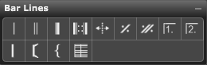

Palette Overview

The following describes each of the tools in the Barlines palette:
- Insert Standard Barline. Select this tool and click a barline in your score to insert a standard barline. Use the standard barline to separate the music into measures.
- Insert Double Barline. Select this tool and click a barline in your score to insert a double barline. Use a double barline to partition separate sections of music.
- Insert Fine. Select this tool and click a barline in your score to insert a Fine. Use a Fine to indicate the end of a composition or of a movement within it.
- Insert Repeat. Select this tool and click to the left side of a measure to insert an open repeat. Use an open repeat to indicate the beginning of a repeating section of music. Click on the right side of the measure to insert a close repeat. Use a close repeat to indicate the end of a repeating section of music. The close repeat affects MIDI playback only if you check Options>Play Style>Repeats (as discussed in Play Style>Repeats). If you check the Repeats option and Overture encounters a close repeat, it searches backward through the score for an open repeat that doesn't have a matching close repeat. It then repeats that section once. If it doesn't find an un-mirrored open repeat, it repeats from the top of the score. For more information, see Using the Close and Open Repeat Tools.
- Insert Dotted Barline. Select this tool and click in your score to insert a dotted barline. Dotted barlines are commonly used to subdivide measures of complex rhythm.
- Insert Single Measure Repeat. Select this tool and click in your score to insert a single measure repeat symbol. This symbol means that you're to repeat the preceding measure in its entirety. It does not affect MIDI playback.
- Insert Double Measure Repeat. Select this tool and click in your score to insert a double measure repeat symbol. This symbol means that you're to repeat the preceding two measures in their entirety. It does not affect MIDI playback.
- Insert First Endings. Select this tool and drag across your score to insert a first ending. Overture automatically names the first ending and inserts a close repeat at the end of it. Use first endings for any ending in your score except for the final ending. MIDI playback recognizes first endings in your score only if you check Options>Play Style>Repeats. For more information, see Using the Ending Tools.
- Insert Final Ending. Select this tool and drag across your score to insert a final ending. MIDI playback recognizes final endings in your score only if you check Options>Play Style>Repeats. For more information, see Using the Ending Tools.
- System Group = Use this tool to group staves as a system.
- Bracket - Use this tool to groups staves with a bracket.
- Brace - Use this tool to groups staves with a brace.
- Cross Staff - Use this toll to connect staves with barlines through each staff..
For more information, see:
Using the Barlines Palette
Using Repeats
Using the Ending Tools
Deleting Barlines